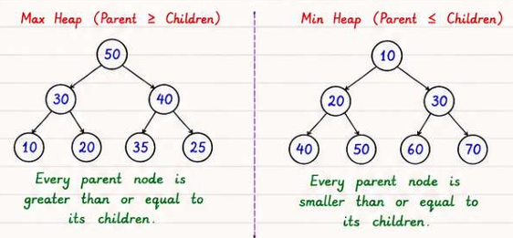

Core idea: A heap is a complete binary tree stored as an array; it gives O(1) min/max peek and O(log n) insert/extract. Use it whenever you need to repeatedly ask "what is the current minimum/maximum?" without sorting everything.
Recognise it when: "kth largest/smallest", "top K", "median of a stream", "merge K sorted …", "schedule tasks with cooldown", "minimum cost to connect".
Costs: Insert O(log n) · Extract O(log n) · Peek O(1) · Build O(n).
A binary heap is a complete binary tree — every level is fully filled except possibly the last, which fills left-to-right — stored compactly in an array via level-order traversal.
Invariant (min-heap): every node's value ≤ both its children's values. The minimum is always at the root.

Array: [1, 3, 5, 7, 9, 6] — index 0 is root; each level reads left-to-right.
Index arithmetic (0-indexed):
| Relation | Formula |
|---|---|
Left child of i |
2i + 1 |
Right child of i |
2i + 2 |
Parent of i |
(i - 1) / 2 |
| First leaf | n / 2 (nodes n/2 … n-1 are leaves) |
1-indexed variant (common in competitive programming): left = 2i, right = 2i+1, parent = i/2. Preferred when bit-shifting is used (i << 1, i >> 1) because it avoids the off-by-one in 0-indexed arithmetic.
| Operation | Description | Time |
|---|---|---|
| Insert | Append at end → sift-up (swap with parent while parent > child) | O(log n) |
| Extract-min | Swap root ↔ last → remove last → sift-down (swap with smaller child) | O(log n) |
| Peek | Read arr[0] |
O(1) |
| Delete arbitrary | Decrease-key to −∞ → extract-min | O(log n) |
| Decrease-key | Update value → sift-up | O(log n) with index map |
| Build-heap | Sift-down all internal nodes n/2-1 … 0 |
O(n) |
Why it works: At height h there are at most ⌈n / 2^(h+1)⌉ nodes, each costing O(h) to sift-down. Total work = Σ_{h=0}^{log n} h · n/2^(h+1) = n · Σ h/2^h. The series Σ h/2^h converges to 2, so total = O(n). Contrast with inserting one-by-one: that is O(n log n).
SIFT_DOWN(arr, n, i): // min-heap
smallest = i
left = 2*i + 1
right = 2*i + 2
if left < n and arr[left] < arr[smallest]: smallest = left
if right < n and arr[right] < arr[smallest]: smallest = right
if smallest != i:
swap(arr[i], arr[smallest])
SIFT_DOWN(arr, n, smallest)
Interviewers occasionally ask you to hand-roll one. Keep it to ~30 lines.
// Min-heap over int. Extend with generics / IComparer for production use.
public class MinHeap
{
private readonly List<int> _data = new();
public int Count => _data.Count;
public int Peek() => _data[0]; // caller must check Count > 0
public void Push(int val)
{
_data.Add(val);
SiftUp(_data.Count - 1);
}
public int Pop()
{
int top = _data[0];
int last = _data.Count - 1;
_data[0] = _data[last];
_data.RemoveAt(last);
if (_data.Count > 0) SiftDown(0);
return top;
}
private void SiftUp(int i)
{
while (i > 0)
{
int parent = (i - 1) / 2;
if (_data[parent] <= _data[i]) break;
(_data[parent], _data[i]) = (_data[i], _data[parent]);
i = parent;
}
}
private void SiftDown(int i)
{
int n = _data.Count;
while (true)
{
int smallest = i, l = 2 * i + 1, r = 2 * i + 2;
if (l < n && _data[l] < _data[smallest]) smallest = l;
if (r < n && _data[r] < _data[smallest]) smallest = r;
if (smallest == i) break;
(_data[smallest], _data[i]) = (_data[i], _data[smallest]);
i = smallest;
}
}
}
Time: Push O(log n) · Pop O(log n) · Peek O(1) · Build by repeated push O(n log n), or heapify loop O(n).
| Operation | Binary heap | d-ary heap | Fibonacci heap |
|---|---|---|---|
| Insert | O(log n) | O(log_d n) | O(1) amortised |
| Extract-min | O(log n) | O(d log_d n) | O(log n) amortised |
| Decrease-key | O(log n) | O(log_d n) | O(1) amortised |
| Build | O(n) | O(n) | O(n) |
| Peek | O(1) | O(1) | O(1) |
d-ary heap: setting d = 4 reduces tree height and improves cache performance during extract; common in Dijkstra implementations.
Fibonacci heap: theoretical Dijkstra bound O((V + E) log V) → O(V log V + E) via O(1) decrease-key. Rarely implemented in practice due to constant factors.
PriorityQueue<TElement,TPriority> (.NET 6+) Min-heap by default — lower priority value is dequeued first.
var pq = new PriorityQueue<string, int>();
// Enqueue / Dequeue
pq.Enqueue("task-A", 3);
pq.Enqueue("task-B", 1);
pq.Enqueue("task-C", 2);
pq.EnqueueRange(new[] { ("task-D", 5), ("task-E", 0) }); // batch enqueue
string item = pq.Dequeue(); // "task-E" (priority 0) — throws if empty
bool ok = pq.TryDequeue(out string? el, out int pri); // safe version
// Peek (does NOT remove)
pq.TryPeek(out string? top, out int topPri);
// Combined atomic ops (useful in hot loops)
pq.EnqueueDequeue("new-item", 2); // enqueue then dequeue min — more efficient than two calls
pq.DequeueEnqueue("new-item", 2); // dequeue min then enqueue — useful in replacement scenarios
// Iterate without removing (unordered!)
foreach (var (element, priority) in pq.UnorderedItems) { ... }
// Max-heap via custom comparer
var maxHeap = new PriorityQueue<int, int>(Comparer<int>.Create((a, b) => b.CompareTo(a)));
// Max-heap via negation (simpler, works for int/long)
pq.Enqueue(value, -value);
// Tuple priorities for tie-breaking (lexicographic comparison)
// (primaryPriority, insertionOrder) ensures stable FIFO within same priority
int seq = 0;
var stable = new PriorityQueue<string, (int, int)>();
stable.Enqueue("x", (priority, seq++));
// No DecreaseKey — use lazy deletion instead (see Dijkstra pattern below)
PriorityQueue has no DecreaseKey. The standard workaround: re-enqueue with a new priority and skip stale entries when dequeuing.
// Dijkstra-style lazy deletion
var dist = new int[n];
Array.Fill(dist, int.MaxValue);
dist[src] = 0;
var pq = new PriorityQueue<int, int>(); // (node, distance)
pq.Enqueue(src, 0);
while (pq.TryDequeue(out int u, out int d))
{
if (d > dist[u]) continue; // stale entry — skip it
foreach (var (v, w) in graph[u])
{
if (dist[u] + w < dist[v])
{
dist[v] = dist[u] + w;
pq.Enqueue(v, dist[v]); // re-enqueue; old entry becomes stale
}
}
}
Why it works: Dijkstra's correctness only requires that we process each node at its final (minimum) distance. When we encounter a stale entry (
d > dist[u]), the node was already processed at a lower cost, so we discard it safely.
Use when: "find K largest/smallest/most frequent/closest …"
Counter-intuitive key: to find K largest, keep a min-heap of size K. The min-heap evicts the weakest candidate, leaving only the strongest K. If you used a max-heap of size K you'd be evicting the best.
// K largest elements — min-heap of size K
// Time: O(n log k) Space: O(k)
int[] TopKLargest(int[] nums, int k)
{
var minHeap = new PriorityQueue<int, int>();
foreach (int num in nums)
{
minHeap.Enqueue(num, num);
if (minHeap.Count > k)
minHeap.Dequeue(); // evict the current smallest
}
// UnorderedItems is NOT sorted — sort if order matters
return minHeap.UnorderedItems
.OrderByDescending(x => x.Element)
.Select(x => x.Element)
.ToArray();
}
Complexity comparison for "top-K" queries:
| Approach | Time | Space | Best when |
|---|---|---|---|
| Full sort | O(n log n) | O(1) | k ≈ n, need sorted output |
| Min-heap size K | O(n log k) | O(k) | k ≪ n, streaming data |
| Quickselect | O(n) average, O(n²) worst | O(1) | k ≪ n, array fits in memory, no sort needed — see Searching and Sorting |
Use when: dynamic median, partitioning a stream into two halves.
Invariant: _lower (max-heap) holds the smaller half; _upper (min-heap) holds the larger half. Sizes differ by at most 1. _lower always has ≥ as many elements as _upper.
// Time: AddNum O(log n) FindMedian O(1) Space: O(n)
class MedianFinder
{
// max-heap: negate priority so PriorityQueue behaves as max-heap
private readonly PriorityQueue<int, int> _lower = new();
// min-heap
private readonly PriorityQueue<int, int> _upper = new();
public void AddNum(int num)
{
// Step 1: always push to lower first
_lower.Enqueue(num, -num);
// Step 2: ensure every element in lower ≤ every element in upper
_lower.TryPeek(out int loMax, out _);
if (_upper.Count > 0)
{
_upper.TryPeek(out int upMin, out _);
if (loMax > upMin)
{
_lower.Dequeue();
_upper.Enqueue(loMax, loMax);
}
}
// Step 3: rebalance sizes so lower.Count == upper.Count or lower.Count == upper.Count + 1
if (_lower.Count > _upper.Count + 1)
{
int v = _lower.Dequeue();
_upper.Enqueue(v, v);
}
else if (_upper.Count > _lower.Count)
{
int v = _upper.Dequeue();
_lower.Enqueue(v, -v);
}
}
public double FindMedian()
{
if (_lower.Count > _upper.Count)
{
_lower.TryPeek(out int m, out _);
return m;
}
_lower.TryPeek(out int a, out _);
_upper.TryPeek(out int b, out _);
return (a + b) / 2.0;
}
}
Trace on [1, 2, 3, 4]:
| Call | lower (max-heap) | upper (min-heap) | Median |
|---|---|---|---|
| AddNum(1) | [1] | [] | — |
| AddNum(2) | [1] | [2] | 1.5 |
| AddNum(3) | [1,2] → rebalance → [1] | [2] → [2,3] | wait… after add(3): lower=[1,2]→rebalance→[2] upper=[3]? No — let's trace carefully |
Detailed trace:
Use when: merging K sorted sequences, Kth smallest in a matrix, smallest range covering K lists.
// Merge K sorted arrays — Time: O(N log K) Space: O(K)
// N = total elements, K = number of sequences
IList<int> MergeKSorted(int[][] arrays)
{
// heap item: (value, arrayIndex, posInArray)
var heap = new PriorityQueue<(int val, int ai, int pi), int>();
for (int i = 0; i < arrays.Length; i++)
{
if (arrays[i].Length > 0)
heap.Enqueue((arrays[i][0], i, 0), arrays[i][0]);
}
var result = new List<int>();
while (heap.TryDequeue(out var item, out _))
{
result.Add(item.val);
int next = item.pi + 1;
if (next < arrays[item.ai].Length)
heap.Enqueue((arrays[item.ai][next], item.ai, next), arrays[item.ai][next]);
}
return result;
}
Use when: "minimum intervals/idle time", "task cooldown", "reorganise so no two same adjacent".
The greedy principle: always pick the highest-frequency (or highest-priority) available item at each step.
// Task Scheduler (LeetCode 621) — corrected greedy simulation
// Time: O(n log n) Space: O(n)
int LeastInterval(char[] tasks, int n)
{
var freq = new int[26];
foreach (char t in tasks) freq[t - 'A']++;
// max-heap on frequency
var maxHeap = new PriorityQueue<int, int>(Comparer<int>.Create((a, b) => b.CompareTo(a)));
foreach (int f in freq)
if (f > 0) maxHeap.Enqueue(f, f);
int time = 0;
// cooldown queue stores (remainingFreq, timeWhenAvailable)
var cooldown = new Queue<(int freq, int available)>();
while (maxHeap.Count > 0 || cooldown.Count > 0)
{
time++;
// release tasks whose cooldown has expired
if (cooldown.Count > 0 && cooldown.Peek().available == time)
{
var (f, _) = cooldown.Dequeue();
maxHeap.Enqueue(f, f);
}
// execute the most-frequent available task
if (maxHeap.Count > 0)
{
int f = maxHeap.Dequeue();
if (f - 1 > 0)
cooldown.Enqueue((f - 1, time + n + 1));
}
// else: CPU is idle this tick
}
return time;
}
O(n) math formula alternative:
int LeastIntervalMath(char[] tasks, int n)
{
var freq = new int[26];
foreach (char t in tasks) freq[t - 'A']++;
int maxFreq = freq.Max();
int countMax = freq.Count(f => f == maxFreq);
// (maxFreq-1) full frames of size (n+1), plus the last partial frame of countMax tasks
int candidate = (maxFreq - 1) * (n + 1) + countMax;
return Math.Max(tasks.Length, candidate);
}
Why the formula works: Picture tasks laid out in frames of
n+1slots. The most-frequent task appearsmaxFreqtimes; it createsmaxFreq-1full frames. Each frame isn+1wide (task + n cooldown slots). The last position holdscountMaxtasks (all tasks tied for max frequency). If other tasks fill in all the cooldown slots, no idle time is needed and the answer is simplytasks.Length.
| Problem says… | Reach for | Complexity |
|---|---|---|
| "Kth largest / smallest" | Min-heap of size K | O(n log k) |
| "Top K frequent / closest" | Frequency map + min-heap size K | O(n log k) |
| "Median from stream / sliding window median" | Two heaps | O(n log n) |
| "Merge K sorted lists / arrays" | Min-heap on list heads | O(N log K) |
| "Kth smallest in sorted matrix" | K-way merge heap | O(k log k) … O(k log min(k,n)) |
| "Task cooldown / CPU scheduling" | Max-heap + cooldown queue | O(n log n) |
| "Minimum cost to connect / combine" | Min-heap + greedy | O(n log n) |
| "Reorganise / rearrange (no two same adjacent)" | Max-heap greedy | O(n log n) |
| "Scheduling with deadlines, maximise profit" | Max-heap on profit | O(n log n) |
| "Ugly numbers / next element from 2–3 sets" | Min-heap dedup | O(k log k) |
| "Sliding window min/max" | Monotonic deque — see Stacks and Queues | O(n) |
| Feature | Heap | SortedSet<T> (Red-Black BST) |
Sorted array |
|---|---|---|---|
| Min/Max peek | O(1) | O(log n) (Min/Max) |
O(1) |
| Insert | O(log n) | O(log n) | O(n) |
| Delete arbitrary | O(log n) with index | O(log n) | O(n) |
| In-order iteration | ❌ | ✅ | ✅ |
| Predecessor/successor | ❌ | ✅ | ✅ (binary search) |
| Range queries | ❌ | ✅ | ✅ |
| Decrease-key | O(log n) with index map | O(log n) delete+insert | O(n) |
| Space | O(n) compact array | O(n) + pointer overhead | O(n) |
Choose heap when you only need repeated min/max extraction and inserts (Dijkstra, top-K, median).
Choose SortedSet when you need predecessor/successor queries, range queries, or ordered iteration (sliding window problems where you delete by value).
PriorityQueue is not stable: equal-priority items are dequeued in unspecified order. If you need determinism, use a tuple priority (primaryPriority, insertionCounter).Dequeue() on empty throws InvalidOperationException: always check Count > 0 or use TryDequeue.int.MinValue overflows: -(int.MinValue) == int.MinValue in C# (two's complement overflow). When faking a max-heap by negating, use long or add a guard: checked { pq.Enqueue(v, -v); }.if (d > dist[u]) continue; causes nodes to be processed multiple times, silently producing wrong results for non-trivial graphs.UnorderedItems is not sorted: iterating pq.UnorderedItems gives elements in internal heap array order, not priority order. Call .OrderBy(x => x.Priority) or drain the heap with repeated Dequeue() if sorted output is required.EnqueueDequeue vs separate calls: EnqueueDequeue is faster (one sift instead of two) and should be preferred in hot loops.→ Full solutions in Problems.md
| # | Problem | LeetCode | Pattern |
|---|---|---|---|
| 1 | Last Stone Weight | 1046 | Max-heap simulation |
| 2 | Kth Largest Element in an Array | 215 | Top-K |
| 3 | K Closest Points to Origin | 973 | Top-K |
| 4 | Top K Frequent Elements | 347 | Top-K + frequency map |
| 5 | Kth Largest Element in a Stream | 703 | Top-K stream |
| 6 | Find Median from Data Stream | 295 | Two heaps |
| 7 | Sliding Window Median | 480 | Two heaps + lazy deletion |
| 8 | Merge k Sorted Lists | 23 | K-way merge |
| 9 | Kth Smallest in Sorted Matrix | 378 | K-way merge |
| 10 | Smallest Range Covering K Lists | 632 | K-way merge |
| 11 | Task Scheduler | 621 | Scheduling + heap |
| 12 | Meeting Rooms II | 253 | Scheduling + heap |
| 13 | Reorganize String | 767 | Greedy + heap |
| 14 | Minimum Cost to Connect Sticks | 1167 | Greedy + heap |
| 15 | IPO | 502 | Greedy + heap |
| 16 | Ugly Number II | 264 | Min-heap dedup |
| 17 | Design Twitter | 355 | K-way merge design |
| 18 | Top K Frequent Words | 692 | Top-K + tie-breaking |
| 19 | Meeting Rooms III | 2402 | Dual-heap scheduling |